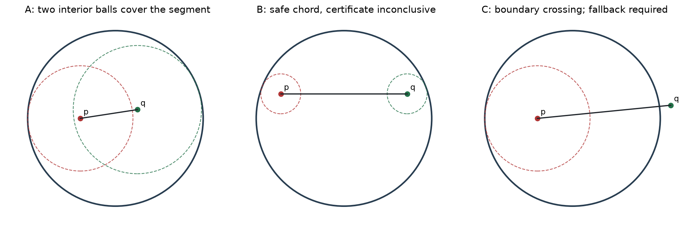

Particle Tracking Acceleration via Signed Distance Fields in DAGMC
Shriwise · Davis · Jacobson · Wilson · 何时可以跳过一次几何求交
打开论文原文或出版记录本页目录
I · 引言
三角化 CAD 的射线查询可能占据输运计算的重要开销。论文保留原几何内核，在调用前先判断这段飞行是否肯定不会遇到边界。
II · 背景
区分点是否在体内、到边界的最短距离、沿给定方向的首次命中。这三种查询的输出不同，同一个标量距离不能直接回答全部问题。
III · 距离场实现
规则网格存储采样值，插值必须附带误差界。用保守半径在起点或两端构造内部球；只有球覆盖整段飞行时才跳过求交。两端标签相同仍可能夹着空腔。
IV · 首次性能测试
把过滤后的跟踪与原内核比较。一次过滤也要查表并访存，减少射线调用次数与缩短总耗时是两个独立观测量，尤其在简单几何中要分别记录。
V · 利用率
把成功省略的射线调用数除以候选调用数。靠近边界、飞行较长或误差界较松都会使覆盖失败。这里的利用率描述特定采样条件下的查询行为。
VI · 球形模型
以球为可解析参照，按起点半径、方向与飞行距离对可覆盖区域积分。固定飞行距离与按指数分布采样的飞行对应不同平均值；随机游走中后续碰撞点也未必均匀。
VII · 带电粒子算例
短步飞行更容易完全落在安全区中。比较原文给出的不同输运问题时，应把步长分布和几何模型一起读，才能解释过滤器何时值得调用。
VIII · 结论与展望
预过滤最适合既能认证足够多飞行、原查询又较昂贵的情形。复杂几何中的预计算、存储和回退成本决定最终收益。
手算安全球判据
设一次直线飞行长 1.0，两端都在同一体积内部，已认证的安全半径为 0.65 和 0.45。沿线段从两端分别覆盖这么长的区间，中间有 0.10 的重叠，因此整段都在内部。
把第二个半径改为 0.25，中间便留下 0.10 的空隙。此时返回原几何内核求交；这个结论只表示证据不足。可以在 nonconvex_example 中观察两端同号却跨过界面的情况。
总结与展望
教学球面算例中，512 个三角形的两端过滤把 5,000 次调用降到 3,709 次，查询耗时从 0.219 s 增至 0.272 s。下一步可以按边界距离分箱统计成功率，解释薄壳为何比实心球更难获益。
对应 demo 与源码
直接配套演示：从 Prefilter 阅读覆盖与回退分支，再运行非凸反例和配对游走。这里采用内部为正的约定。
原文与配套笔记
